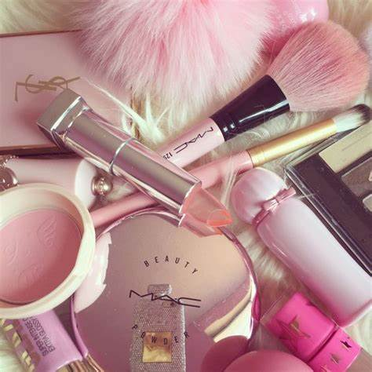

Blog
Ya sea que apenas estás comenzando o tengas años de experiencia y amor por el maquillaje, una cosa es cierta: muchas brochas, esponjas y herramientas esenciales para crear looks increíbles y llamativos son demasiado caras. Por esta razón nos dimos a la tarea de buscar todos los artículos que son indispensables para hacer de nuestro maquillaje uno de los accesorios más impresionantes de nuestro look. Desde diferentes tipos de bases y máscaras para pestañas hasta geles para dibujar una ceja perfecta, a continuación te mostramos las mejores 12 herramientas para perfeccionar nuestro maquillaje.